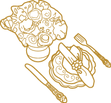

Закажите обратный звонок, и мы подробно расскажем вам о всех возможностях проведения банкетов в Летнем Дворце
Белые шатры, изящные скульптуры, газон перед парадным входом Летнего Дворца – прекрасное место для красивой церемонии выездной регистрации, пропитанной нежностью и романтикой.
Опыт работы Кирилла в самых знаменитых ресторанах Санкт-Петербурга - «Аустерия», «Сказка», «Сенат», группе «Тритон», участие в международных кулинарных конкурсах — все это дало возможность сделать кухню Летнего дворца такой, какой она сегодня является — свежей, изысканной, способной приятно удивить настоящего гурмана.
Текст про актуальность проблемы малых и больших залов. Не в том ли причина, что у меня нет сейчас ни малейшей уверенности в настоящем? Все мне кажется сконструированным. Любое замечание, любой случайный взгляд все переворачивает во мне, даже забытое, совершенно незначительное. Я не уверен в себе больше, чем когда бы то ни было, лишь насилие жизни ощущаю я. И я совершенно пуст. Я подобен овце, потерянной ночью в горах, или овце, бегущей вслед за этой овцой. Быть таким потерянным и не иметь даже сил это оплакать.
На сколько человек расчитан зал:
Банкет
Фуршет
Конференция
300
50
80
Розовый и Живописный
Такова площадь нашего банкетного зала. Мы можем разделить его на 2 зала, или объединить — и тогда зал позволит разместить более
Площадь200 м2
На сколько человек расчитан зал:
Банкет
Фуршет
Конференция
300
50
80
Малые залы
Такова площадь нашего банкетного зала. Мы можем разделить его на 2 зала, или объединить — и тогда зал позволит разместить более
Площадь200 м2
На сколько человек расчитан зал:
Банкет
Фуршет
Конференция
300
50
80
Летний павильон
Такова площадь нашего банкетного зала. Мы можем разделить его на 2 зала, или объединить — и тогда зал позволит разместить более
Площадь200 м2
Мы можем организовать удивительно красивую выездную регистрацию
На свежем воздухе, удобно расположившись на красиво украшенных стульях, гости будут наблюдать за Вашей церемонией бракосочетания. Перед изящной аркой, увитой живыми цветами и атласными лентами, в лучах солнца Вы обменяетесь кольцами и клятвами любви и верности.
3
Залы и территория
Летний дворец предоставляет уникальные возможности по организации мероприятий любой сложности.
Общая площадь двух залов составляет 840 м2. Залы могут быть объеденины в единое пространство, или разделены на два зала для одного, менее масштабного мероприятия. Общая площадь двух залов составляет 840 м2. Залы могут быть объеденины в единое пространство, или разделены на два зала для одного, менее масштабного мероприятия. Общая площадь двух залов составляет 840 м2. Залы могут.
Короткое описание этого вида прибытия. Можно в две строки. Можно и в три строки. Можно даже больше, в четыре строки. Пожалуй, достаточно.
НЕТ ПЕШИ БОЛЬШЫ!
Короткое описание этого вида прибытия. Можно в две строки. Можно и в три строки. Можно даже больше, в четыре строки. Пожалуй, достаточно.
5
Необыкновенная кухня
Кухня Дворца — фантазия без границ
Кухня Летнего дворца способнеа полностью подстраиваться под особенности вашено праздника. Мы можем предложить как стандартное банкетное меню, так и нечто удивительное — сказочные подачи шоу-блюда, эффектное появление блюд и многое другое.

Банкетное меню
Выверенное и сбалансированное. Если вы не хотите ничего придумывать — просто воспользуйтесь стандартным предложением.
Нашей кухней можно насладиться и вне стен Летнего Дворца. Воспользуйтесь услугой кейтеринга – выездного ресторанного обслуживания. Мы составим для Вас меню, подберем площадку и организуем питание на любом мероприятии. Только свежие продукты, лучшие рецепты, изысканная подача и лучший сервис.
Мы можем по Вашему желанию привезти шатры любых размеров, все красиво оформить тканями и цветами, привезти сцену, звуковую и световую аппаратуру, пригласить артистов, то есть полностью организовать Ваш праздник.
8
Шоу-программы
Свадебные шоу-программы
Сценарий шоу, созданный и реализованный главным режиссером Летнего Дворца, позволит гостям комплекса погрузиться в атмосферу настоящего праздника. Стоит задача создать иллюзию Венецианского карнавала, воссоздать атмосферу Чикаго 30-х годов, отправить гостей на Нью-Йорк-пати или на Бал вампиров, а может пригласить всех на «Голубой огонек»? — Нет проблем и нет предела фантазии заказчиков, воплощенной в жизнь режиссером комплекса.
Наши возможности по проведению шоу-программ почти неисчерпаемы. Как на счет того, чтобы разместить автомобиль в банкетном зале? А коня? Наши возможности по проведению шоу-программ почти неисчерпаемы.